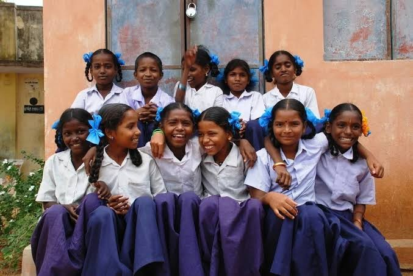

Partner schools
The schools we're working with
Our pilot is being built with schools in rural West Bengal.


Partner School 1Village, District, West Bengal

Partner School 2Village, District, West Bengal

Students in the field labMeasuring, asking, building